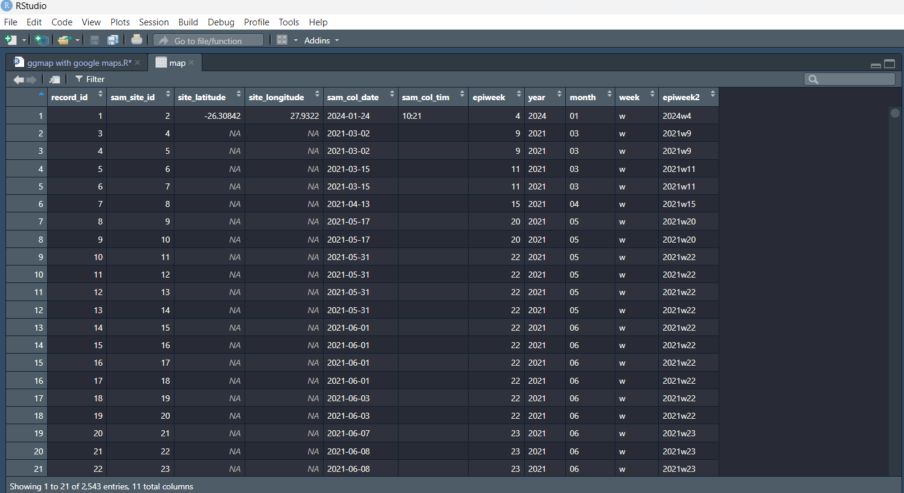

GIS graphs for Sample Tracking
When wastewater samples are collected, the RedCap Mobile App is used to capture the sample collection forms. These forms contain information about when, where and how a sample was collected.This helps us ensure that samples are collected from the correct sites and assists in sample tracking.
Since we have the location (longitude and latitute) of the samples being collected, we can plot them on a map using R and Google Maps. Other GIS software, such as ArcGIS, may also be used; however, for this tuturial we will only be using open source software.
Setting up
In order to run this script you will need R version 4.2.2 or higher. You will also need to register a Google API in order to be able to make use of Google services within R. To register with google you can visit the Google Maps Platform
Once registered, ensure that you enable your API. It is important to note that your API key should be kept private and should not be shared with anyone else. This key will be used to connect with Google Maps using your R script.
To get started, you will need the following packages to run the script: ggmap, rstudioapi, tidyverse, lubridate and ggrepel.
If you do not already have these packages installed, you can simply use the install.packages() function. You can simply copy and paste the below and click "Run" to install the package:
install.packages("ggmap")
Multiple packages can also be installed at the same time by creating a list of the packages to be installed using the c() function:
install.packages(c("ggmap", "rstudioapi", "tidyverse", "lubridate", "ggrepel"))
Once you have installed a package in R, you don't need to install it again when you subsequently use R. However, you do need to tell R which packages you would like to use to run the script. We can do this using the library() function:
library(ggmap)
library(rstudioapi)
library(tidyverse)
library(lubridate)
library(ggrepel)
Once we have loaded the libraries we would like to use, we have to connect to Google using our API key. We can do this using:
register_google(key = 'enter-your-key-here')
Preparing our data
Now we are ready to work with our data. As previously mentioned, this data is collected using RedCap. In order to obtain this data you will need to export it from RedCap. The data exported is in the form of a .csv file.
You can download an example dataset to practice with here: wastewater_sample_data.csv
We can take that csv file and save it as a dataframe which we will call "map" using the read.csv() function:
map <- read.csv("Path/to/the/file.csv", check.names = F) #Replace the path with the path to the file on your computer
If you view the "map" dataframe, you will notice that each column name is separated by a fullstop. This is because spaces in column headings were replace with a fullstop when we were reading in the csv file. For example: "Sample Number" becomes "Sample.Number.". To make it a bit easier to work with, we are going to rename the columns we will be working with:
map$record_id <- map$Sample.Number.
map$sam_site_id <- map$Sample.Site.Identification.Number.
map$site_latitude <- map$Site.Location..lat.
map$site_longitude <- map$Site.Location..long.
map$sam_col_date <- as.Date(map$Sample.Collection.Date) #the as.Date() function just ensures that the dates are being recognised as dates
map$sam_col_tim <- map$Sample.Collection.Time.
Since we only want to work with these columns, we're going to filter out all the ones we don't need and select the ones we want to work with. This step isn't really that necessary, but helps keeps things tidy and is easier to work with:
map <- map %>%
select(record_id, sam_site_id, site_latitude, site_longitude, sam_col_date, sam_col_tim)
Since we report our findings using epidemiological weeks, or epiweeks, we want to add another column with the epiweeks. We can use the sample collection date to calculate the epiweek:
map$epiweek <- lubridate::epiweek(ymd(map$sam_col_date)) #ymd indicates that our dates are saved in the year-month-day format (e.g. 2023-09-15)
We also want to create a column which has both the year and epiweek (e.g. 2023w36). In order to produce this we first have to create a column with the year, another column with the week and then finally concatenate the columns to create the new epiweek2 variable:
map$year <- strftime(map$sam_col_date, "%Y") #Creating year column
map$week <- "w" #creating a week column with "w" representing the weeks.
my_cols <- c("year", "week", "epiweek") #creating a new data object which combines the 3 columns in the specified order
map$epiweek2 <- do.call(paste, c(map[my_cols],sep ="")) #taking that data object and saving it in the newly created epiweek2 column
The "map" dataframe should now look like the example below.

Generating the maps
Now that our data is in the format that we want, we can create maps of where the samples were created. The first map will show all points at which samples were collected.
We first have to specify that we want to save the map as an image as well as the folder we would like the map to be stored
png("path/to/file/map1.png",
width = 5*900, #specify width dimension
height = 5*500, #specify height dimension
res = 300, #specifying the resolution of the image
pointsize = 8)
Then we generate the site map. Because google map uses the location at the center of a map, we must first supply it with the coordinates at the center of our sample collection sites. For our sample collection sites we use the following coordinates as the center of our map.
City of Ekurhuleni: lon = 28.23570, lat = -25.99873
City of Johannesburg:lon = lon = 27.91593 , lat = -26.31008
City of Tshwane:lon = 28.12 , lat = -25.76257
If you want to generate a map for a different city, you can simple use that city's coordinates as the center of your map.
To generate a map of all samples collected in the City of Ekurhuleni we first have to tell Google when the center of our map is
coe_sites <- ggmap(get_googlemap(center = c(lon = 27.91593 , lat = -26.31008),
zoom = 12,
maptype = "hybrid",
color = "color")) +
To add points (red dots) where samples were collected onto the Google Maps, we use the coordinates of each sample collected in the "map" dataframe we created.
geom_point(data = map, aes(x= site_longitude, y=site_latitude),
color = "red", #we specify the colour of our points
size= 2) + #we specify the size of our point
theme(axis.title = element_blank(), #This remove the title from the map
axis.text = element_blank(), #This removes coordinates from being displayed along the x- and y-axis
axis.ticks = element_blank()) #This removes any axis-ticks
To then generate the maps, we finally run:
coj_sites
dev.off()
You should now have a map illustrating all sample collection points in the City of Ekurhuleni.

In order to generate a map showing samples collected during a specific epiweek, as well as the time in which those samples were collected, we will first create another dataframe called "map2" and filter for a specific epiweek:
map2 <- map%>%
filter(epiweek == 37)
Then we create a map of all the points collected during that epiweek:
png("path/to/file/map2.png",
width = 5*900,
height = 5*500,
res = 300,
pointsize = 8)
coe_sites2 <- ggmap(get_googlemap(center = c(lon = 28.23570, lat = -25.99873),
zoom =12,
scale = 2,
maptype = "hybrid",
color = "color")) +
geom_point(data = map2, aes(x= site_longitude, y=site_latitude), #ensure that you are using the filtered "map2" dataframe
color = "red",
size= 2) +
In addition to creating the map we want to add labels showing the sample collection times. Since the sample colletion times are also recorded on the sample collection forms, we can use the geom_label_repel() function to convert those times into sample labels. Here we specify that for each sample, the longitude will be use as our x-coordinate, latitute for the y-coordinate and sample collection time as the label
geom_label_repel(data = map2,
aes(x= site_longitude, y=site_latitude, label = sam_col_tim),
size = 6)+ #specify size of the label
theme(axis.title = element_blank(),
axis.text = element_blank(),
axis.ticks = element_blank())
coe_sites2
dev.off()
You should now have two maps illustrating the sample collection points.